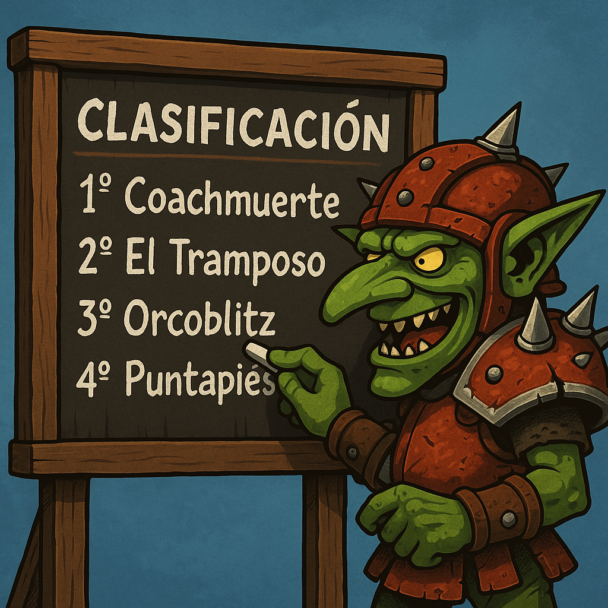

Blood Bowl Ranking España nace con el objetivo de compartir diferentes clasificaciones ELO de los jugadores españoles tanto en los resultados de los partidos NAF como de los partidos de BBT (BBTournaments).
Se puede encontrar las clasificaciones divididas en dos grupos: NAF España, NAF Mundial y BBT. La primera englobará todos los torneos registrados en la NAF, la segunda todos los torneos registrados en BBT.
A su vez, los grupos de la NAF está dividido en NAF España dónde están filtrado solo los jugadores españoles, y NAF Mundial con todos los jugadores NAF del mundo. A su vez estás estarán divididas en tres clasificaciones distintas: un ranking global, dónde el ELO evoluciona a lo largo de la historia y no se resetea nunca y no está separado por razas, un ranking anual, dónde el ELO evoluciona a lo largo de un año natural y se resetea a 150 cada 1 de enero y no está separado por razas, y el clásico ranking global por razas, dónde el ELO evoluciona a lo largo de la historia y no se resetea nunca y está separado por razas.
En el caso del grupo del BBT estará dividido en dos clasificaciones distintas: un ranking global y un ranking anual.
Cada página del ranking encontrarás en la clasificación tanto la posición general de la clasificación, el número NAF, el nick de entrenador, la Comunidad Autónoma de ese entrenador, o el País en el caso de los rankings de NAF Mundial, y entre paréntesis la posición en la clasificación entre los jugadores de esas Comunidad Autónoma/País, el número de torneos y partidos jugados, las victorias, empates y derrotas, el win ratio y el ranking de dicha clasificación.
La Comunidad Autónoma de cada jugador se irá rellenando poco a poco según se vaya indicando puesto que no hay ningún lugar dónde consultar dicho dato, en caso de no tener el dato aparecerá como "Apatrida", si deseas indicar cuál es tu Comunidad Autónoma o el de algún otro entrenador o corregir algún error que detectes, puedes ponerte en contacto a través del formulario de contacto.

Si te gusta la web y lo deseas puedes colaborar con el mantenimiento de la página y los rankings con el botón de donación en el menú principal. ¡Gracias!
Web creada por dreamscreator